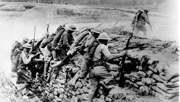

World War I, otherwise called the Great War, started in 1914 after the death of Archduke Franz Ferdinand of Austria. His homicide shot into a war across Europe that went on until 1918. During the contention, Germany, Austria-Hungary, Bulgaria and the Ottoman Empire (the Central Powers) battled against Great Britain, France, Russia, Italy, Romania, Japan and the United States (the Allied Powers). On account of new military innovations and the detestations of close quarters conflict, World War I saw remarkable degrees of bloodletting and obliteration. When the war was finished and the Allied Powers guaranteed triumph, in excess of 16 million individuals—troopers and regular people the same—were dead.
